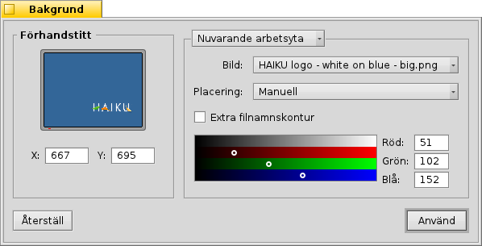

Bakgrunder
Bakgrunder
| Deskbar: | ||
| Location: | /boot/system/preferences/Bakgrunder | |
| Settings: | ~/config/settings/system/app_server/workspaces ~/config/settings/Backgrounds settings - lagrar panelens fönsterposition. |
Du kan välja färg eller en bild som bakgrund för varje mapp och för skrivbordet i varje arbetsyta.
Den översta menyn bestämmer om dina ändringar gäller den nuvarande arbetsytan, alla arbetsytor, en specifik mapp eller som standard för alla nya mappar.
Under detta kan du välja en bild eller väja om du bara vill ha en färg som bakgrund. Bilder kan också släppas på förhandsvisningen till vänster.
Om du använder en bakgrundsbild behöver du bestämma en placering:
| Låter dig bestämma koordinaterna. Du kan dra bilden i förhandsvisningsningen, eller ange X och Y koordinaterna manuellt. | ||
| Centrerar bilden i mitten. | ||
| Förstorar eller minskar bilden så att den fyller hela ytan. | ||
| Upprepar bilden över hela ytan. |
Med skapas en tunn kontur runt ikontexten.
Huruvida en ikontext är svart eller vit beror på färgväljarens inställning. En mörk bakgrundsfärg gör att texten blir vit, medans en ljus färg gör den svart. Om du vill ha en ljus bild som bakgrund bör du även välja en ljus bakgrundsfärg, så att ikontexten blir läsbar (eller använda Filnamnskontur).
Den valda färgen syns även i skrivbordsprogrammet Arbetsytor, som dock inte visar bakgrundsbilder.
| Återställer dom ändringar som var när Bakgrund startades. | ||
| Sparar dina ändringar. |